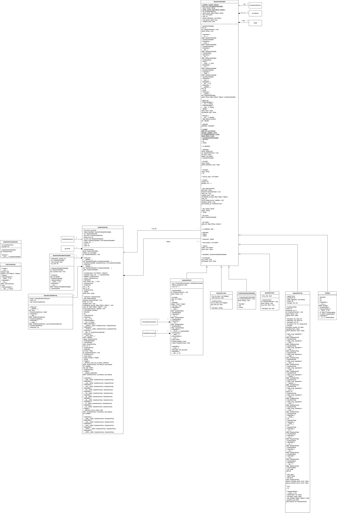

QuantumManagement

Information about classes and methods
The ‘QuantumMangagement’ diagram is a very important diagram within the Qrisp framework. It contains central classed such as the ‘QuantumCircuit’ or ‘QuantumSession’ class, that provide some of the most basic functionalities of circuit and session management of Qrisp [22]. ‘QuantumCircuit’ work with Lists of qubits and classical bits and provide the basic structure for measurement of a circuit. ‘QuantumCircuit’ objects need to run within a ‘QuantumSession’. Additionally ‘Instruction’ as well as ‘GroupedInstruction’ are also displayed in the diagram with the addition of ‘QuantumState’ and ‘BufferedQuantumState’.
QuantumCircuit
Class functionality:
The ‘QuantumCircuit’ class in Qrisp is used to describe and construct quantum
circuits.
Its
design and naming closely follow Qiskit’s ‘QuantumCircuit’, enabling strong
interoperability. [23]
Class constructor and attributes:
The class instantiates 2 parameters. The parameters ‘num_qubits’ and ‘num_clbits’ are integers, which determine the amount of qubits or classical bits assigned to a ‘QuantumCircuit’ object. The attributes of the class are:
‘qubit_index_counter: ndarray’
An array used to keep track of the indices assigned to
qubits
within the circuit. It ensures that each qubit receives a unique and consistent index.
‘clbit_index_counter: ndarray’
Similar to the qubit counter, this array tracks the
indices of
classical bits in the circuit, ensuring correct mapping and ordering.
‘xla_mode: int’
An integer flag determining whether the circuit is operating in
XLA-compatible
mode. This can influence how operations are constructed or validated.
‘abstract_params: Set[sympy.Symbol]’
A set containing all symbolic parameters used within
the
circuit. These parameters typically come from SymPy and allow for parameterized gates or symbolic analysis.
‘qubits: List[Qubit]’
A list of all quantum bits that belong to the circuit. Each element
is a
Qubit object representing a physical or logical qubit.
‘clbits: List[Clbit]’
A list of classical bits associated with the circuit. These are
used for
measurement outcomes or classical control flow.
‘data: List[Instruction]’
A sequential list of all instructions applied to the circuit.
Each
instruction includes an operation (e.g., a gate or measurement) and its target qubits and/or clbits.
Class methods:
In the qrisp documentation for ‘QuantumCircuit’ methods are divided into:
- Constructing ‘QuantumCircuit’s
- Evaluating ‘QuantumCircuit’s
- Interfacing
- Operation application methods
Constructing ‘QuantumCircuit’s:
- ‘append’ — append an arbitrary Operation or Instruction to the circuit
- ‘to_op’ — convert the entire circuit into an Operation object.
- ‘to_gate’ — convert the circuit into a “gate” (i.e. an operation) — like to_op, but with the restriction that the circuit must not contain classical bits (mirroring Qiskit’s semantics).
- ‘add_qubit’ — add a new quantum bit (Qubit) to the circuit.
- ‘add_clbit’ — add a new classical bit (Clbit) to the circuit.
- ‘copy’ — generate a deep copy of the circuit (i.e. duplicate the circuit, including its qubits, classical bits and instructions).
- ‘clearcopy’ — create a copy of the circuit’s qubits and classical bits, but with no instructions — i.e. an “empty” circuit with the same registers.
- ‘inverse’ — returns the inverse (dagger) of the quantum circuit (i.e. the reversed circuit with inverted operations).
- ‘extend’ — extend (concatenate) this circuit with another ‘QuantumCircuit’, optionally applying a translation dictionary (e.g. mapping bits) to integrate them.
- ‘bind_parameters’— for circuits with symbolic (abstract) parameters: return a new circuit where specified symbolic parameters (e.g. Sympy symbols) are bound to concrete values.
- ‘transpile’ — transpiles the ‘QuantumCircuit’ in the sense that there are no longer any synthesized gate objects.
Evaluating ‘QuantumCircuit’s:
- 'run' — runs the circuit on a backend and returns measurement results.
- 'statevector_array' — simulates the circuit and returns the statevector as a NumPy array.
- 'get_unitary' — computes the unitary matrix of the circuit.
- 'compare_unitary' — compares this circuit’s unitary to another circuit’s unitary.
- 'depth' — returns the circuit depth.
- 't_depth' — returns the T-depth of the circuit.
- 'cnot_depth' — returns the CNOT-depth of the circuit.
- 'num_qubits' — returns the number of qubits in the circuit.
- 'count_ops' — returns a count of all gate types in the circuit.
- 'to_latex' — produces a LaTeX representation of the circuit.
- 'qasm' — exports the circuit in QASM format.
Interfacing:
- 'from_qiskit' — creates a ‘QuantumCircuit’ from an existing Qiskit circuit.
- 'from_qasm_str' — constructs a ‘QuantumCircuit’ from a QASM string.
- 'from_qasm_file' — loads a ‘QuantumCircuit’ from a QASM file.
- 'to_qiskit' — converts the circuit into a Qiskit ‘QuantumCircuit’.
- ‘to_pennylane’ — method to convert the given ‘QuantumCircuit’ to a Pennylane Circuit.
- ‘to_pytket’ — method to convert the given QuantumCircuit to a PyTket Circuit.
Operation application methods:
- 'measure' — adds a measurement operation to one or more qubits, optionally storing results in classical bits.
- 'x' — applies a Pauli-X (NOT) gate to the target qubit(s).
- 'y' — applies a Pauli-Y gate to the target qubit(s).
- 'z' — applies a Pauli-Z gate to the target qubit(s).
- 'h' — applies a Hadamard gate, creating equal superpositions.
- 'cx' — applies a controlled-X (CNOT) gate with one control and one target.
- 'cy' — applies a controlled-Y gate.
- 'cz' — applies a controlled-Z gate.
- 'mcx' — applies a multi-controlled X gate with arbitrarily many control qubits.
- 'ccx' — applies a Toffoli gate (double-controlled X).
- 'rx' — applies a rotation around the X axis.
- 'ry' — applies a rotation around the Y axis.
- 'rz' — applies a rotation around the Z axis.
- 'p' — applies a phase gate.
- 'cp' — applies a controlled-phase gate.
- 'u3' — applies a general single-qubit U3 rotation (general Euler-rotation gate).
- 'swap' — swaps the states of two qubits.
- 't' — applies a T-gate (pi/8 phase).
- 't_dg' — applies the inverse of the T-gate.
- 's' — applies an S-gate (sqrt(Z) phase).
- 's_dg' — applies the inverse of the S-gate.
- 'sx' — applies the square-root of X gate.
- 'sx_dg' — applies the inverse of the SX gate.
- 'rxx' — applies a two-qubit XX-rotation.
- 'rzz' — applies a two-qubit ZZ-rotation.
- 'xxyy' — applies a parameterized XXYY-rotation on two or more qubits.
- 'reset' — resets qubits to the computational |0⟩ state.
- 'unitary' — applies an arbitrary custom unitary matrix to specific qubits.
- 'gphase' — applies a global phase to the entire state.
- 'id' — applies an identity operation (no-op), useful for alignment or placeholders.
Details and design decisions:
The class contains many methods, some of them are static, which is underlined in the diagram. There is also a dunder method ‘__str__’, which changes the representation of the object. ‘QuantumCircuit’ has three compositions to ‘Qubit’, ‘Clbit’ and ‘Instruction’ because they don’t cease to have functionality without a circuit. They only find purpose within a context, such as a ‘QuantumCircuit’ object. Additionally it is the parent class of ‘‘QuantumSession’’.
QuantumSession
Class details:
“The ‘QuantumSession’ class manages the life cycle of ‘QuantumVariable’s and enables features such as QuantumEnvironments or Uncomputation.” [24]
Class constructor and attributes:
The class constructor is receiving an optional single attribute called ‘backend’, which is a ‘BackendClient’, instantiated as ‘backend’. The class attributes are:
‘qv_list: List[‘QuantumVariable’]’
A list of all quantum variables created within this
session.
Used to track and manage all active qubits/quantum data objects.
‘env_stack: List[QuantumEnvironment]’
A LIFO stack of currently active quantum
environments. Used
to manage nested blocks or context-dependent operations.
‘uncomp_stack: List[‘QuantumVariable’]’
A stack of quantum variables that still need to
be
uncomputed, i.e., whose computation should be reversed. Relevant for reversible programming.
‘qs_tracker: List[weakref.ReferenceType]’
Weak references to additional ‘QuantumSession’s
or
linked objects, preventing cyclic references. Supports memory management.
‘will_be_uncomputed: bool’
Indicates whether the session is currently in a region where
automatic
uncomputation is applied. Controls reversible-flow optimizations.
‘shadow_sessions: List[‘QuantumSession’]’
A list of sessions running as “shadow copies,”
used for
parallel tracking, caching, or theoretical simulation.
‘deleted_qv_list: List[‘QuantumVariable’]’
A list of quantum variables that have been
deleted or
released. Used for debugging, logging, or memory tracking.
Class methods:
‘register_qv’ – Registers a ‘QuantumVariable’ in the session with a given size.
‘get_qv’ – Retrieves a ‘QuantumVariable’ by its string key.
‘__str__’ – a dunder method, changing the string representation of the ‘QuantumSession’.
‘get_depth_dic’ – Returns a dictionary describing circuit depth information.
‘add_qubit’ – Adds a new qubit to the session (or registers an existing one).
‘__call__’ – a dunder method, that returns the current ‘QuantumSession’ when invoked.
‘add_clbit’ – Adds a classical bit to the session (or registers an existing one).
‘request_qubits’ – Requests and allocates a specific number of qubits, optionally naming them.
‘clear_qubits’ – Clears or frees the given qubits, optionally verifying safety.
‘delete_qv’ – Deletes a ‘QuantumVariable’ from the session, with optional verification.
‘cnot_count’ – Returns the number of CNOT gates present in the current circuit.
‘get_local_qvs’ – Returns a list of ‘QubitVariable’ objects local to the current environment.
‘logic_synth’ – Performs logic synthesis based on a truth table onto given input/output qubits.
‘__eq__’ – a dunder method, that compares this ‘QuantumSession’ to another one for equality.
‘append’ – Appends an instruction or operation to the circuit with associated qubits, clbits, and parameters.
‘__getitem__’ – a dunder method, that retrieves a ‘QuantumVariable’ via dictionary-like indexing.
‘clear_data’ – Clears all quantum/classical data tracked by the session.
‘statevector’ – Computes and returns the session’s statevector, optionally plotting it.
‘compile’ – Compiles the session into a QuantumCircuit with various optimization options.
‘__del__’ – a dunder method, that is called on deletion of the ‘QuantumSession’ (cleanup).
‘__hash__’ – a dunder method, that returns a hash value for the session (for use in sets/maps).
‘__setattr__’ – a dunder method, that intercepts attribute setting to manage session-specific behavior.
‘get_active_quantum_session’ – a static method, that returns weak references to currently active ‘QuantumSession’s.
Details and design decisions:
‘QuantumSession’ has 3 aggregations and 2 compositions. ‘weakref.ReferenceType’ is an aggregation because the referenced objects aren’t objects of the ‘QuantumSession’ itself. ‘BackendClient’ is too is an aggregation, because a ‘BackendClient’ can have multiple ‘QuantumSession’ objects. ‘QuantumVariable’ is a composition, because the lists could not exist outside of the ‘QuantumSession’. ‘QuantumEnvironment’ is also a composition, because while can still exist without a ‘QuantumSession’, it would not make sense. The ‘shadow_sessions’ can exist without the main session, thus it is an aggregation.
The class inherits from QuantumCircuit.
Instruction
Class functionality:
“This class combines Operation objects with their operands (ie. qubits and classical bits). The data attribut of the QuantumCircuit class consists of a list of Instructions.“ [25]
Class constructor and attributes:
The class constructor is receiving a ‘Operation’ object as ‘ob’, and optionally a list of ‘Qubit’ objects and a list of ‘Clbit’ objects. These get instantiated as class attributes.
Class methods:
The class contains 5 methods:
‘merge’ – delivers an ‘Instruction’ combining this ‘Instruction’ with another ‘Instruction’.
‘copy’ – delivers the copied ‘Instruction’.
‘inverse’ – delivers the inversed ‘Instruction’.
‘_str_’ – a dunder method changing the representation of the string representation of ‘Instruction’
‘__repr__’ – a dunder method that delivers an unambiguous, developer-oriented representation of an ‘Instruction’ object.
Details and design decisions:
The class has a aggregation to ‘Operation’, because the ‘op’ can exist outside of the ‘Instruction’ object. The ‘qubits’ and ‘clbits’ attributes have a composition, because the classes do not provide functionality without a context, here ‘Instruction’. The class does not inherit.
GroupedInstruction
Class functionality:
From the qrisp source code [14]:
“This class is supposed to describe a group of instructions. The idea behind the grouping is that grouping instructions together allows to precalculate their unitary. This saves alot of time because applying a medium size unitary on a large statevector is more efficient than applying many small unitaries.”
Class constructor:
The class constructor receives a ‘QuantumCircuit’ as ‘int_qc’, a list of integers as ‘indices’ and an optional list of qubits as ‘qubits’.
Class attributes:
The class attributes are:
- ‘gate_signature_list: List[Object]’ – this attribute isn’t used in the class
- ‘qubits: List[Qubit]’ – these qubits are the unique qubits of the ‘int_qc’ instruction
- ‘instr_list: List[Instruction]’ - these instructions are the source data of ‘int_qc’
- ‘indices: List[Integer]’ – these indices are the received ‘indices’
- ‘gain: int’ – this gain means how beneficial it is to group the instructions.
- ‘instruction: Instruction’ – this instruction wraps all grouped gates into a single composite operation that replaces the original sequence of instructions in the circuit.
Class methods:
The class contains one method:
‘get_instruction’ – delivers all grouped gates into a single composite operation as a ‘Instruction’.
Details and design decisions:
The class has a aggregation to ‘Instruction, because the ‘intr_list’ objects can exist outside of the ‘GroupedInstruction’ object. The ‘qubits’ attributes has a composition, because the class does not provide functionality without a context. The class does not inherit.
QuantumState
Class functionality:
From the Qrisp documentation [14]:
“This class describes a quantum state. This is achieved by another class, the TensorFactor. Each qubit initially has its own tensor factor. When an entangling operation is executed, the TensorFactors can be entangled. We then have the situation that two qubits are described by the same TensorFactor.”
Class constructor and attributes:
The class constructor receives an integer ‘n’, which is instantiated. A second class attribute is ‘tensor_factors’, a list of ‘TensorFactor’ objects.
Class methods:
The class contains 7 methods:
‘apply_operation’ – applies an ‘Operation’ to one or multiple ‘Qubit’ objects within this
quantum
state.
‘eval’ – returns a ‘TensorFactor’ representing the evaluated quantum
state.
‘copy’ – delivers a copied version of the current
‘QuantumState’.
‘measure’ – measures a specific qubit index ‘i’ and returns the
measurement
result and the resulting ‘QuantumState’.
‘multi_measure’ – performs multiple
measurements on
selected qubits and returns measurement outcomes and the corresponding post-measurement
states.
‘add_qubit’ – adds a new qubit to the current quantum
state.
‘disentangle’ – removes entanglement involving the qubit at index
‘qb’;
optionally reports warnings.
Details and design decisions:
The class has an aggregation to ‘TensorFactor’ , because operations applied to the state can exist independently of the ‘QuantumState’ object itself.
BufferedQuantumState
Class functionality:
‘BufferedQuantumState’ acts as a buffered wrapper around a quantum-state simulator, batching operations, managing qubits, and synchronizing measurements and gate application across either a Qrisp or Stim backend.
Class constructor and attributes:
The class constructor receives an optional ‘simulator’ String, which is by default “qrisp”.
The class attributes are:
- ‘buffer_qc: QuantumCircuit’ – this is the buffered quantum circuit that temporarily stores operations before they are applied to the simulator.
- ‘quantum_state: QuantumState | stim.TableauSimulator’ – this is the underlying quantum-state simulator backend used to evolve the quantum state.
- ‘deallocated_qubits: List[Qubit]’ – this list tracks qubits that have been deallocated and should be removed during buffer application.
- ‘simulator: String’ – this string specifies which simulation backend (‘qrisp’ or ‘stim’) is being used.
- ‘qubit_to_index_dict: Map[Qubit, Integer]’ – this dictionary maps circuit-level qubit objects to their corresponding simulator-state indices.
- ‘qubit_counter: int’ – this counter assigns sequential indices to newly allocated qubits.
- ‘gate_counts: Map[String, Integer]’ – this dictionary tracks how many times each gate type has been executed or measured.
Class methods:
The class contains 8 methods:
‘BufferedQuantumState’ – initializes the buffered quantum-state wrapper using either the
‘qrisp’ or ‘stim’ simulator backend.
‘add_qubit’ – allocates a new
qubit,
registers it in the index map, and adds it to both the buffer and the underlying
simulator.
‘append’ – appends an ‘Operation’ or ‘Instruction’ to the buffer for later
application to the quantum state.
‘apply_buffer’ – applies all buffered operations to
the
quantum-state simulator and clears the buffer afterward.
‘measure’ – measures a given
qubit and
returns the measurement result together with the updated ‘QuantumState’.
‘reset’ –
resets a
qubit to the |0⟩ state by measuring and conditionally applying an X gate.
‘copy’ –
delivers a
copied version of the current ‘BufferedQuantumState’, including mappings and internal
state.
‘multi_measure’ – performs multiple measurements on selected qubits and returns
either
sampled results or full probability distributions.
Details and design decisions:
The class has an aggregation to ‘QuantumState’ , because ‘QuantumState’ objects can exist outside the ‘BufferedQuantumState’ object itself. The ‘QuantumCircuit’ relationship is an aggregation, because the ‘QuantumCircuit’ object can exist by itself, independent of a ‘BufferedQuantumState’ object. The connection to ‘Qubit’ is a composition, because they don’t provide functionality without a context. This class does not inherit.
This concludes the ‘QuantumManagement’ diagram.